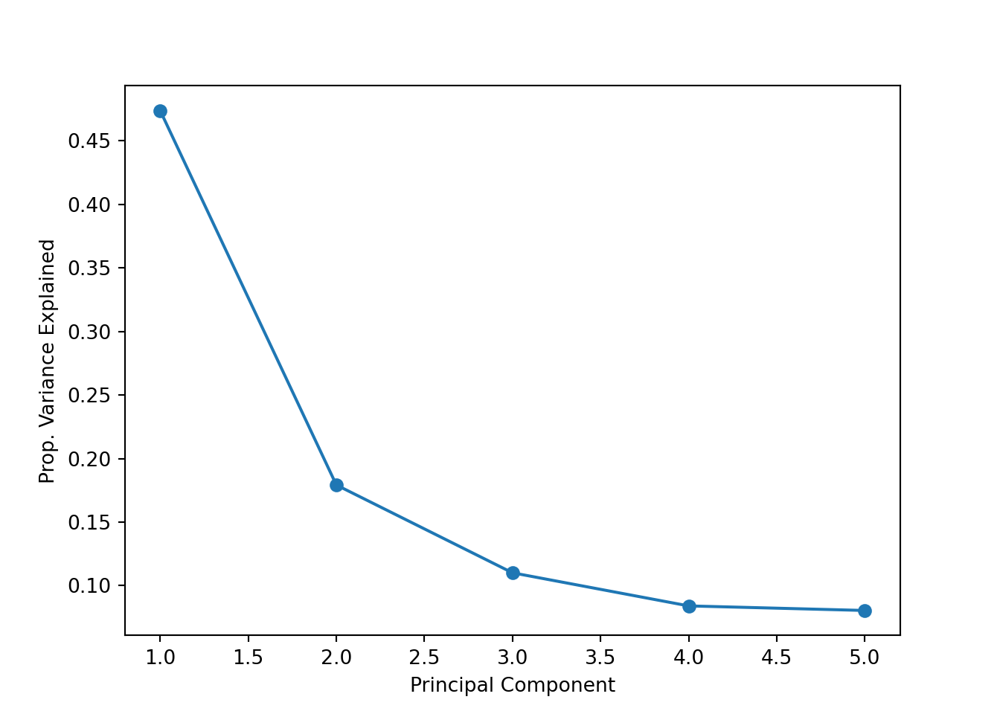
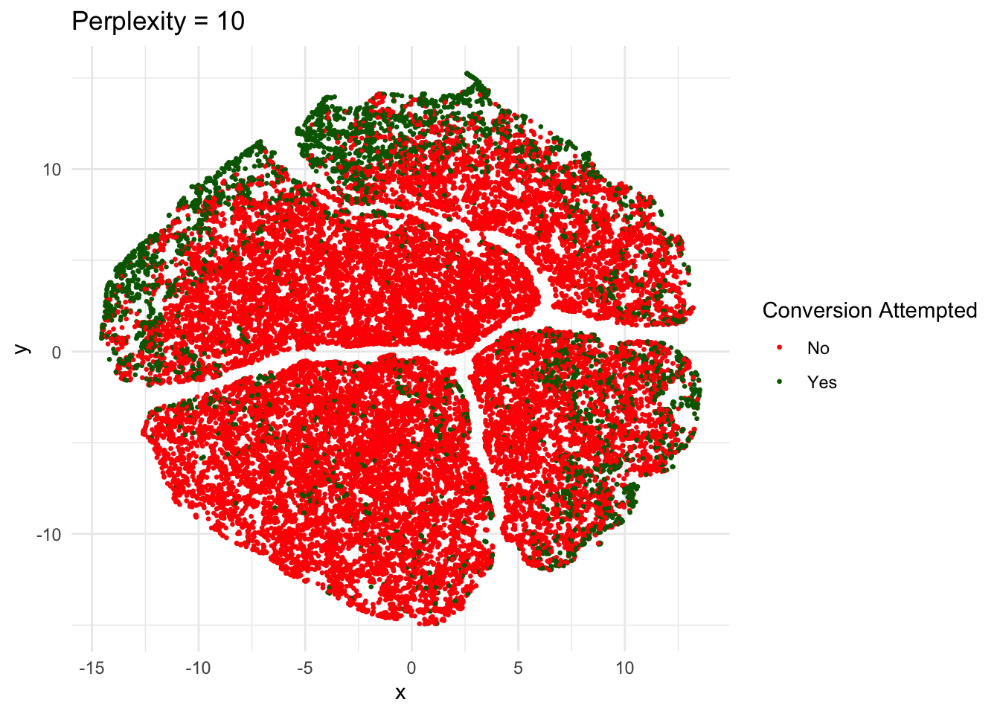
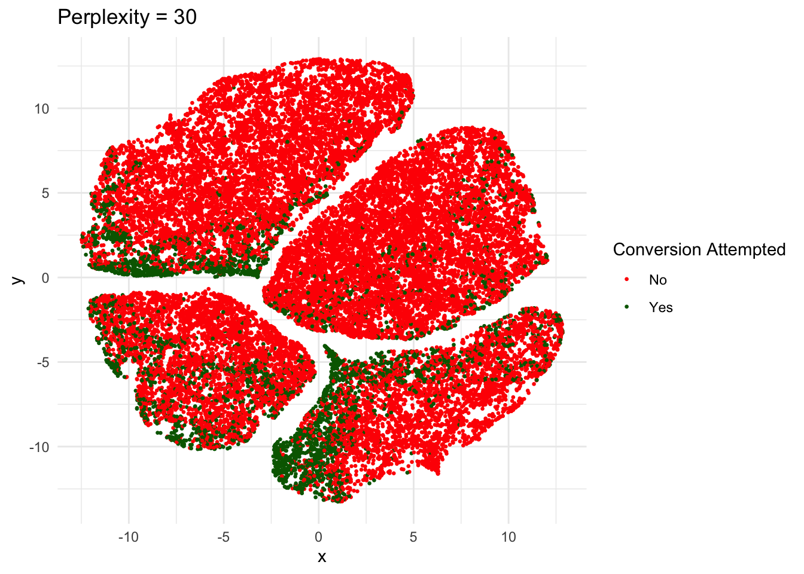
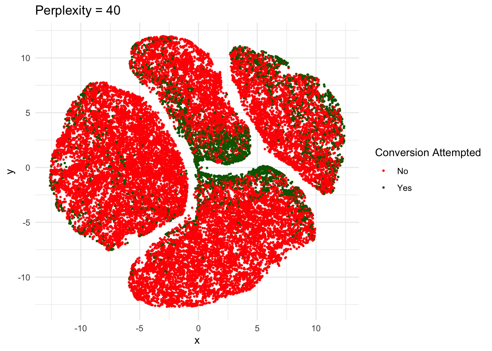

Imports and Data
library(tidyverse)
library(plotly)
library(reticulate)
library(gridExtra)
library(kableExtra)
load("data/raw_nfl.Rdata")library(tidyverse)
library(plotly)
library(reticulate)
library(gridExtra)
library(kableExtra)
load("data/raw_nfl.Rdata")df <- raw_data %>%
filter(!is.na(go_boost) & !is.na(go)) %>%
select(season, home_coach, away_coach, posteam, defteam, posteam_type, game_half, half_seconds_remaining, ydstogo, yardline_100, posteam_score, defteam_score, posteam, go_boost, go, epa, wp_fail, wp_succeed, wp, fg_make_prob, miss_fg_wp, make_fg_wp, punt_wp)
df <- df %>%
mutate(coach = if_else(posteam_type == "home", home_coach, away_coach),
home_coach = coach,
score_diff = posteam_score - defteam_score,
go = if_else(go == 100, 1, 0),
game_half = if_else(game_half == "Half1", 1, 2)) %>%
select(-coach,
-away_coach,
-season,
-posteam,
-defteam,
-posteam_type,
-epa,
-punt_wp,
-posteam_score,
-defteam_score) %>%
rename(coach = home_coach) %>%
select(-go, everything())
write.csv(df, "data/df.csv")
kable(head(df))| coach | game_half | half_seconds_remaining | ydstogo | yardline_100 | go_boost | wp_fail | wp_succeed | wp | fg_make_prob | miss_fg_wp | make_fg_wp | score_diff | go |
|---|---|---|---|---|---|---|---|---|---|---|---|---|---|
| John Harbaugh | 1 | 1625 | 1 | 66 | 1.8427797 | 0.4501592 | 0.5882827 | 0.5102725 | 0.0000000 | 0.4320890 | 0.5741632 | 0 | 0 |
| John Harbaugh | 1 | 1612 | 6 | 71 | -1.1323169 | 0.4403515 | 0.5971214 | 0.4710029 | 0.0000000 | 0.4196399 | 0.5725211 | 0 | 0 |
| Rex Ryan | 1 | 1482 | 18 | 76 | -5.7820437 | 0.3423280 | 0.5154754 | 0.4189611 | 0.0000000 | 0.3280475 | 0.5250292 | 0 | 0 |
| Rex Ryan | 1 | 1230 | 6 | 43 | 2.0073829 | 0.3919702 | 0.5667855 | 0.4749633 | 0.0000000 | 0.3907058 | 0.5210628 | 0 | 0 |
| Rex Ryan | 1 | 1230 | 11 | 48 | -0.6287521 | 0.3906138 | 0.5670854 | 0.4759269 | 0.0000000 | 0.3771124 | 0.5210628 | 0 | 0 |
| John Harbaugh | 1 | 941 | 15 | 32 | -4.0096273 | 0.5135549 | 0.6866364 | 0.5298005 | 0.6625606 | 0.4986032 | 0.6224666 | 0 | 0 |
import json
import pandas as pd
import numpy as np
import matplotlib.pyplot as plt
import seaborn as sns
from sklearn.metrics import silhouette_samples, silhouette_score
from sklearn.decomposition import PCA
from sklearn.preprocessing import StandardScalerX = r.df
to_drop = ["coach", "go"]
X = X.drop(to_drop, axis = 1)
Y = r.df["go"]
scaler = StandardScaler()
X = scaler.fit_transform(X)
pca = PCA(n_components = 5).fit(X)
variance_ratios = pca.explained_variance_ratio_
plt.cla()
plt.plot(range(1, len(variance_ratios) + 1), variance_ratios, marker='o')
plt.xlabel("Principal Component")
plt.ylabel("Prop. Variance Explained")
plt.show()
The optimal number of principal components to keep is 2, looking at where the “elbow” is on this graph of the proporition variance explained by each principal component.
pca = PCA(n_components = 2).fit(X)
Xp = pca.transform(X)
Xp_df = pd.DataFrame(Xp, columns = ['x', 'y'])ggplot(data = py$Xp_df, aes(x = x, y = y, color = factor(py$Y))) +
geom_point(size = 0.5) +
scale_color_manual(values = c("red", "darkgreen"),
name = "Conversion Attempted",
labels = c("No", "Yes")) +
labs(x = "First Principal Component", y = "Second Principal Component") +
geom_abline(intercept = 1, slope = 0.3, color = "black", linewidth = 1.5) +
theme_minimal()
When graphing the first and second principal components and coloring each based on whether the coach attempted a conversion on the play (0 being no and 1 being yes), we can see some clustering take place. There is a clear main group of points with most of the green points being in the upper left portion of the cluster, and the red points being in the bottom right. There are more red than green points, which makes sense as there are more 4th down plays where coaches did not go for it than ones where they did. There are also some outliers where points increase in the y-direction up to 8. From this analysis, it is worth looking at those outliers to see why they are so far up there, as well as the points that are on the edge of the border between red and green points. I have drawn an approximate line on the graph for demonstration purposes, just to show the area that I think is worth looking at.
from sklearn.manifold import TSNEX_5 = TSNE(n_components=2,learning_rate='auto',init='random', perplexity=5, n_iter=300).fit_transform(X)
X5_df = pd.DataFrame(X_5, columns = ['x', 'y'])
X_10 = TSNE(n_components=2,learning_rate='auto',init='random', perplexity=10, n_iter=300).fit_transform(X)
X10_df = pd.DataFrame(X_10, columns = ['x', 'y'])
X_20 = TSNE(n_components=2,learning_rate='auto',init='random', perplexity=20, n_iter=300).fit_transform(X)
X20_df = pd.DataFrame(X_20, columns = ['x', 'y'])
X_30 = TSNE(n_components=2,learning_rate='auto',init='random',perplexity=30, n_iter=300).fit_transform(X)
X30_df = pd.DataFrame(X_30, columns = ['x', 'y'])
X_40 = TSNE(n_components=2,learning_rate='auto',init='random', perplexity=40, n_iter=300).fit_transform(X)
X40_df = pd.DataFrame(X_40, columns = ['x', 'y'])
X_50 = TSNE(n_components=2,learning_rate='auto',init='random', perplexity=50, n_iter=300).fit_transform(X)
X50_df = pd.DataFrame(X_50, columns = ['x', 'y'])p5 <- ggplot(data = py$X5_df, aes(x = x, y = y, color = factor(py$Y))) +
geom_point(size = 0.5) +
scale_color_manual(values = c("red", "darkgreen"),
name = "Conversion Attempted",
labels = c("No", "Yes")) +
labs(x = "x", y = "y") +
theme_minimal() +
ggtitle("Perplexity = 5")
p10 <- ggplot(data = py$X10_df, aes(x = x, y = y, color = factor(py$Y))) +
geom_point(size = 0.5) +
scale_color_manual(values = c("red", "darkgreen"),
name = "Conversion Attempted",
labels = c("No", "Yes")) +
labs(x = "x", y = "y") +
theme_minimal() +
ggtitle("Perplexity = 10")
p20 <- ggplot(data = py$X20_df, aes(x = x, y = y, color = factor(py$Y))) +
geom_point(size = 0.5) +
scale_color_manual(values = c("red", "darkgreen"),
name = "Conversion Attempted",
labels = c("No", "Yes")) +
labs(x = "x", y = "y") +
theme_minimal() +
ggtitle("Perplexity = 20")
p30 <- ggplot(data = py$X30_df, aes(x = x, y = y, color = factor(py$Y))) +
geom_point(size = 0.5) +
scale_color_manual(values = c("red", "darkgreen"),
name = "Conversion Attempted",
labels = c("No", "Yes")) +
labs(x = "x", y = "y") +
theme_minimal() +
ggtitle("Perplexity = 30")
p40 <- ggplot(data = py$X40_df, aes(x = x, y = y, color = factor(py$Y))) +
geom_point(size = 0.5) +
scale_color_manual(values = c("red", "darkgreen"),
name = "Conversion Attempted",
labels = c("No", "Yes")) +
labs(x = "x", y = "y") +
theme_minimal() +
ggtitle("Perplexity = 40")
p50 <- ggplot(data = py$X50_df, aes(x = x, y = y, color = factor(py$Y))) +
geom_point(size = 0.5) +
scale_color_manual(values = c("red", "darkgreen"),
name = "Conversion Attempted",
labels = c("No", "Yes")) +
labs(x = "x", y = "y") +
theme_minimal() +
ggtitle("Perplexity = 50")


Perplexity levels 20 and 30 seem to do the best job at reducing the dimensions so that similar points are grouped together, as there are clearer areas of green within the larger areas of red. However, going forward I would prefer to use PCA as my chosen method of dimensionality reduction due to the clearer distinction drawn between the two types of points. PCA seems to preserve data structure and information better than t-SNE because of this difference. The visualization capabilities are similar between the two, though it was easier to make a distinction between points in this case, as I only have two categories of points I am looking at. This may be a place that PCA outperforms t-SNE, as there are only two types of points. If there were multiple scenarios being looked at, then t-SNE may perform better. This is worth keeping in mind going forward as there are instances where there are many categories of points that could be looked at.